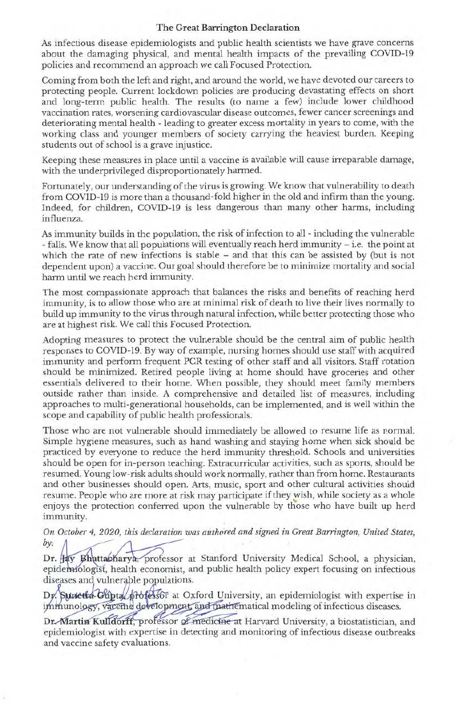
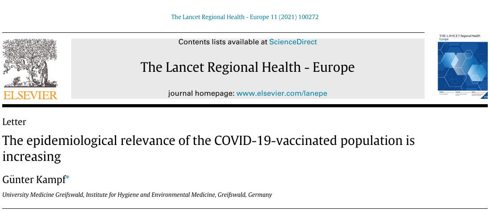

51:02 · 3 OPERE
Cose che avvengono quando la demenza trionfa.
Il filo del discorso
Il relatore mette in discussione il rapporto fra potere politico, informazione e controllo del dissenso, intrecciandolo con una riflessione sul metodo scientifico. La lettura di una email di Francis Collins sulla Great Barrington Declaration diventa il punto di partenza per parlare di critica pubblica, moderazione delle piattaforme e autorità degli esperti.
Leggi la sintesi completaRiduci la sintesi
Una tabella che distingue scienza, pseudoscienza e negazione della scienza apre poi una parte più teorica: il ruolo delle evidenze, la disponibilità a correggersi e la funzione di idee storicamente superate. I manoscritti di Newton offrono un esempio della distanza fra una biografia reale e una rappresentazione scolastica semplificata. La parte finale torna alla pandemia attraverso una lettera scientifica sulla trasmissione e una serie di segnalazioni ed episodi cardiaci, usati dal relatore per insinuare una causa comune. La scheda rende esplicito il limite di questa inferenza: segnalare un evento successivo non dimostra che sia stato causato dalla vaccinazione, e un elenco di casi non misura un aumento del rischio. Vengono distinti il tono di una email e la prova di una rimozione governativa, la pubblicazione di una critica e la validità delle sue conclusioni. I giudizi su persone e istituzioni restano attribuiti, senza diagnosi o accuse di colpevolezza assunte come fatti.
I libri nel discorso

The Great Barrington Declaration
Note sul riferimento
Dichiarazione firmata: FACSIMILE DEL DOCUMENTO di una pagina, datato e firmato il 4 ottobre 2020 a Great Barrington. Testo inglese e tre firme visibili; PDF attualmente ospitato da AIER, con metadati del file del settembre 2021, distinti dalla data della dichiarazione. La strategia proposta è denominata Focused Protection. Non è una copertina libraria né il libro collettaneo pubblicato successivamente.
Pagina integrale del documento con testo e firme. La data del testo è 2020; il file corrente presenta metadati 2021. Non è la copertina del libro successivo.
Great Barrington Declaration esplicita nel commento della email Collins–Fauci.

Bibbia
Note sul riferimento
Copertina: San Paolo, 2014 · Nuova Versione dai Testi Antichi · edizione di riferimento
Apocalisse e Genesi nominate fra gli interessi religiosi di Newton, senza edizione specifica.

The epidemiological relevance of the COVID-19-vaccinated population is increasing
Identificazione probabile
Note sul riferimento
Intestazione originale della lettera scientifica, non copertina di libro: The Lancet Regional Health–Europe, volume 11, dicembre 2021, articolo 100272, pubblicato online il 20 novembre 2021; DOI 10.1016/j.lanepe.2021.100272. Intestazione originale estratta dal PDF della pubblicazione, con rivista, titolo e autore; non copertina libraria. Il PDF completo resta privato. È una Letter di commento a studi e rapporti, non un nuovo trial clinico. Distinta da COVID-19: stigmatising the unvaccinated is not justified, altro articolo dello stesso autore su The Lancet 398, p. 1871.
Estratto documentale della prima pagina: titolo, autore e testata conservati, corpo della lettera escluso. Copia PDF confrontata con DOI e record PubMed. L’identificazione del riferimento orale resta probabile.
Data 20 novembre 2021 e frase sui dati ottobre 2021 e possibile trasmissione corrispondono alla Letter di Kampf; titolo/autore non chiaramente pronunciati.